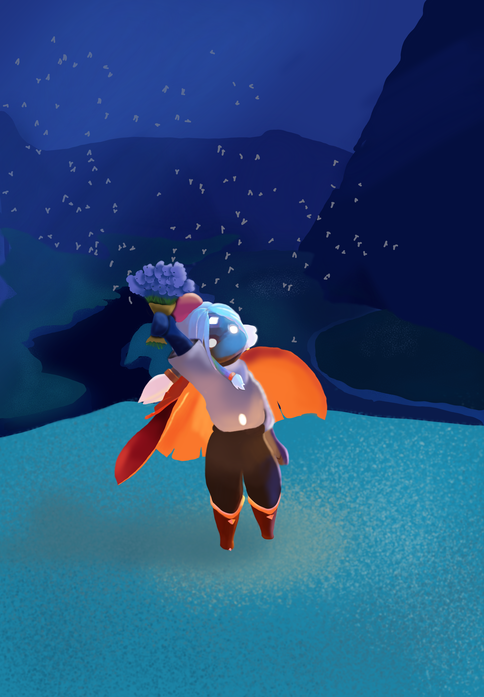
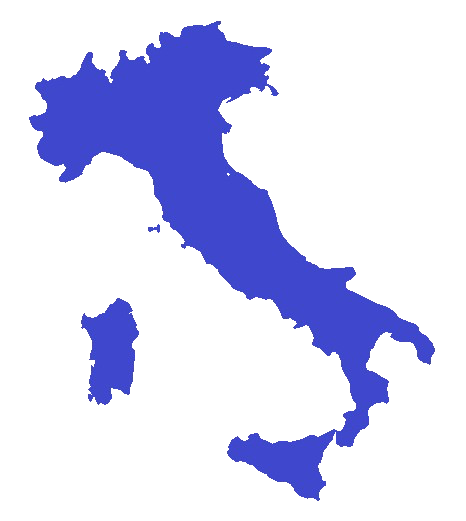
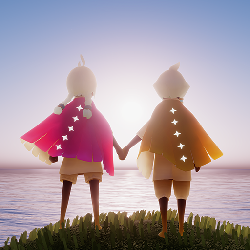

Light this candle
to revisit the memories we left in the sky.
A birthday constellation for you
Happy birthday, Niby ♡
Happy birthday to the second most important person in my life. To the person who brought music into my life and stayed beside me during these last three months.
I love you so much, and I really hope you get to spend a beautiful birthday with your friends. Unfortunately, your favorite pipo won't be there with you, but don't worry: I will absolutely be inside your head. <3

This first image is a drawing I made for you. And honestly, I would be the happiest person alive if you printed it and put it in your room, together with all the other prints you already have.
This is our little story: all the screenshots, all the memories, all the places we crossed together, and all the light you brought into my life.
Our constellation
Every little run, every joke, every screenshot, every quiet flight became part of this tiny sky.
Some people enter your life quietly.
A shared candle. A random message. A simple flight.
And before you realize it, they become part of your sky. Thank you for being part of mine.
— with love, from your Sky friend Marta ✦

Italy
The distance between Italy and the Philippines is more than 10,000 kilometers.
Somehow, Sky made it feel much smaller.
We haven't met in person yet.
But somehow, we've already shared a sky.